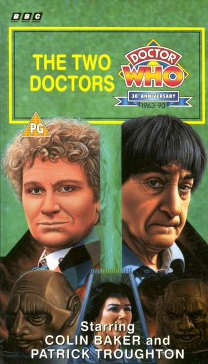
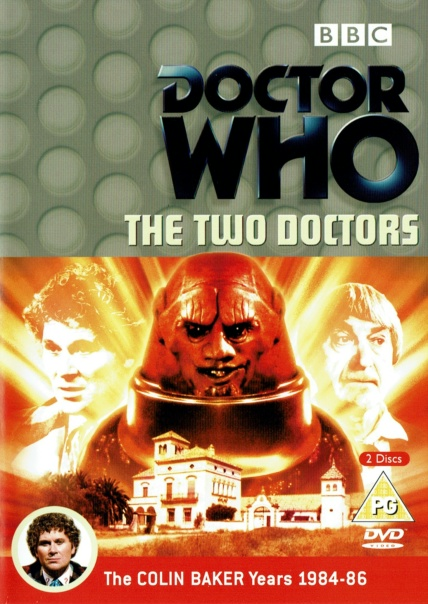
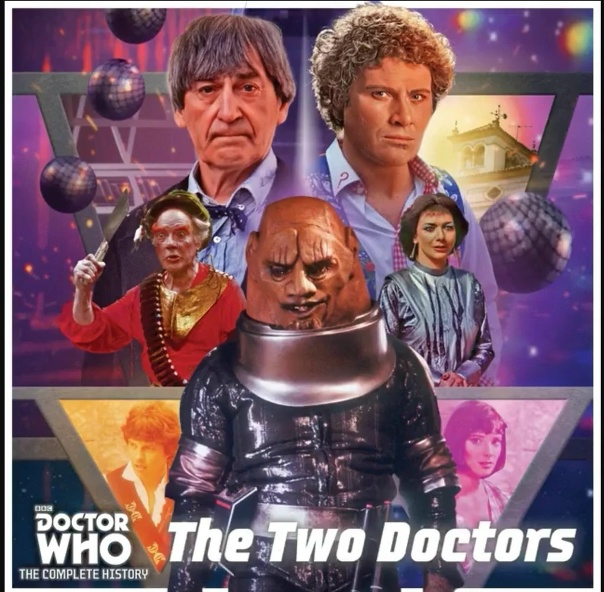

Эра Шестого Доктора (22 сезон)
<<< НАЗАД ||| 4. Два Доктора ||| ДАЛЬШЕ >>>
или
ДАЛЬШЕ >>> к мини-эпизоду
Субтитры: Русские и Английские |  |
|---|---|
+ Расширенная версия (эпизод 1) Субтитры: только Английские | |
+ Расширенная версия (эпизод 1) с фанатской локализацией видеоряда (HuracanTeam) Субтитры: только Английские | |
The Two Doctors
Дата выхода: 16 февраля - 2 марта 1985
Формат: 3 эпизода по 45 мин.
 |
ТАРДИС Шестого Доктора и Пери прибывает на космическую станцию в далёком будущем, где Второй Доктор (Патрик Траутон) с Джейми проводит эксперименты с временем. Но что-то идёт не так — Второй Доктор пропадает, а Шестой и Пери обнаруживают, что его похитили сонтаранцы, работающие вместе с андроагами — расой генетических манипуляторов, которым нужны данные о времени. События переносятся в Испанию, где в старинном поместье разворачивается охота на обоих Докторов.
Третий и последний раз в классическом сериале появился Патрик Траутон — Второй Доктор, на этот раз в команде с Шестым. Съёмки проходили в Испании — второй зарубежный локейшен за два сезона. Серия длилась 45 минут на эпизод, и вместо привычных четырёх частей вышла в трёх. А ещё это одна из самых кровавых серий классического сериала — андроаги препарируют людей и едят их, что вызвало очередную волну жалоб на жестокость.
 VHS - ноябрь 1993 |  DVD - 8 сентября 2003 |
|---|---|
 DVD-Boxset - 5 мая 2008 |  Blu-ray - 20 июня 2022 * Версия в нашей группе |



Отрывок: